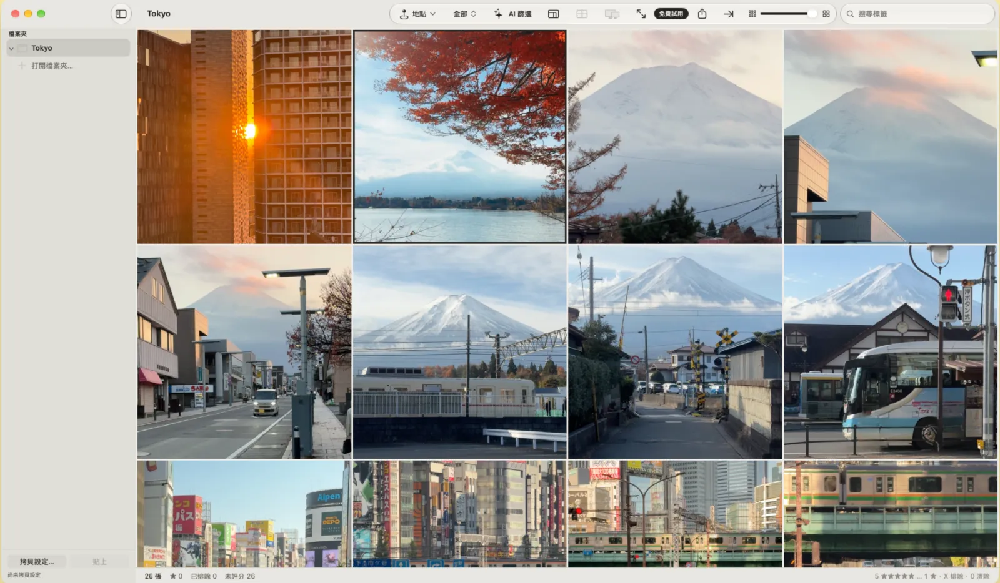
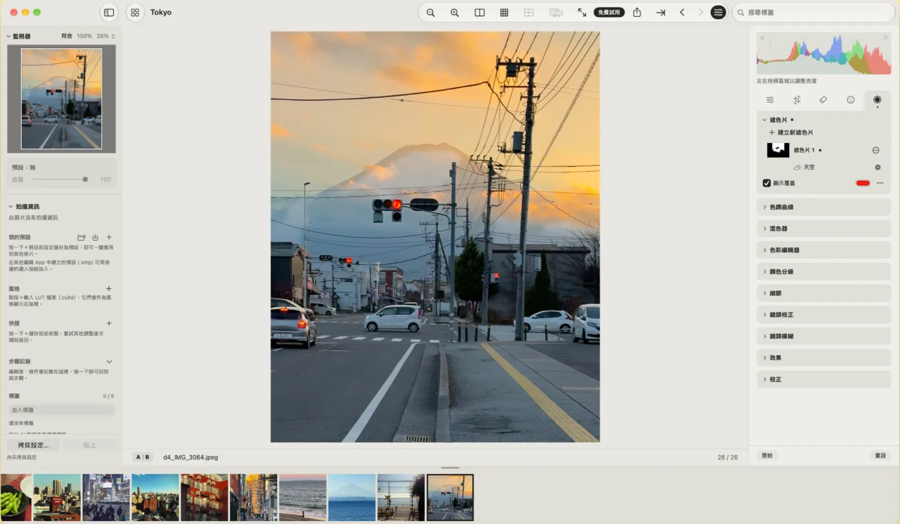
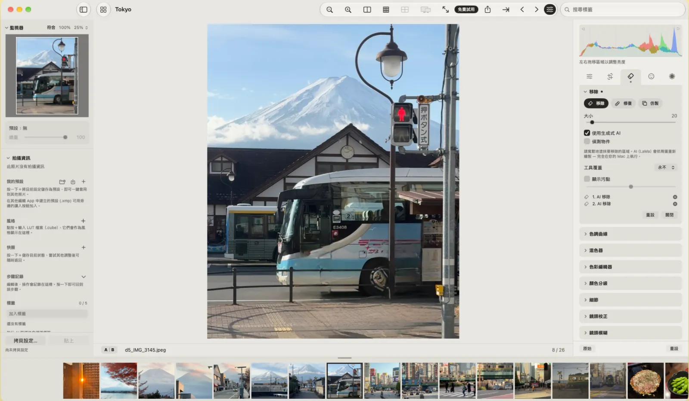

免匯入，直接開啟資料夾
開啟 SD 卡或外接 SSD 上的資料夾，照片立即出現。沒有圖庫、沒有資料庫——編輯儲存在照片旁的 XMP 檔案中，原始照片保持不變。
打開資料夾就能開始：不必匯入，直接瀏覽、挑選和沖印。照片絕不離開你的 Mac 或 Windows 電腦，所有 AI 都在裝置上執行。
免費下載，30 天內免費試用所有功能。需要 macOS 26 或以上版本。 Windows 需 10（64 位元）或更新版本。
如果出現「Windows 已保護您的電腦」，請按一下「其他資訊」→「仍要執行」。

為你的相機調校的 RAW — 針對 130 多款相機調校的描述檔。曝光、色調曲線、色彩分級——成千上萬張照片也能快速處理。
開啟 SD 卡或外接 SSD 上的資料夾，照片立即出現。沒有圖庫、沒有資料庫——編輯儲存在照片旁的 XMP 檔案中，原始照片保持不變。

柔膚、均勻膚色並保留質感。用滑桿調整臉型、下巴、眼睛、鼻子與嘴唇，還能一次去除多張照片中同一個人的瑕疵。

按一下即可選取主體、天空、背景或人物，並分別調整每個遮色片。透過增加、減去與交集來精修。

塗抹想去掉的部分，它會依周圍自動填補。所有 AI 都在本機執行，照片絕不會離開你的 Mac 或 Windows 電腦。

開啟 AI 連線後，Claude 或 ChatGPT（Codex）可以直接操作 Butter Edit：從連拍中挑出最好的一張、依你描述的感覺調色、對齊參考照片的色調，還能加入遮色片、裁切與輸出——只要開口說。
直接購買版（Mac 與 Windows）的功能。需要你自己的 Claude 或 ChatGPT 帳號。預設關閉；開啟期間，AI 查看的小尺寸預覽圖會傳送到你連線的 AI 服務。
「為這個檔案夾裡每組連拍中最好的一張打 3 星」
「把這張照片調成溫暖的底片感」
「按照桌面上參考照片的色調來調」
沒有刪除照片的指令。調整可以還原（Mac 用 ⌘Z，Windows 用 Ctrl+Z）。
Butter Edit 是一款不必匯入、沒有圖庫目錄的照片編輯器。打開 SD 卡或外接 SSD 上的資料夾，照片馬上出現——瀏覽、挑選、沖印 RAW 並編輯。它專為快速處理成千上萬張照片而設計。
不是訂閱。買一次，一直用。
瀏覽、挑選與編輯永遠免費。
按一下「開始 30 天免費試用」，即可在 30 天內使用所有功能。試用結束後不會自動收費。
試用結束後只有輸出會被鎖定。購買一次即可永久輸出。
在 App Store 之外直接購買，可在 Mac 與 Windows 上使用，最多 3 台電腦。
比較兩種購買方式 →
如有任何問題，請寄電子郵件給我們: thefilmtravel@gmail.com
請寫明你的電腦（Mac 機型與 macOS 版本，或 Windows 版本）、相機機型以及發生了什麼事。
App 可免費下載。按一下「開始 30 天免費試用」，即可在 30 天內使用所有功能。試用結束後，瀏覽、挑選與編輯仍可繼續；輸出則需要一次性的解鎖購買。不會自動收費。
在登入相同 Apple 帳號的 Mac 上，打開設定 →「購買」，按一下「回復購買項目」。
原始照片不會被更改。編輯儲存在照片旁的 .xmp 檔案中。
在 Mac 上，Butter Edit 可開啟 macOS 支援之相機的 RAW 檔案；在 Windows 上，可開啟 App 內建 RAW 解碼器（LibRaw）支援之相機的 RAW 檔案。新相機通常在 macOS 或 App 更新後即可開啟。
在 App 中控制以 USB 連接的相機，並把新拍的照片直接存進你的資料夾。第一次連接時請允許取用相機。